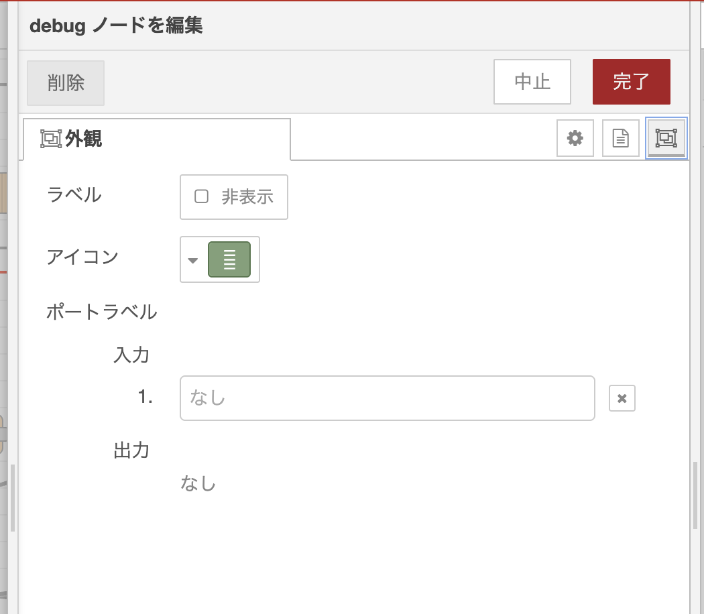
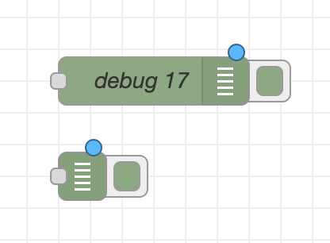
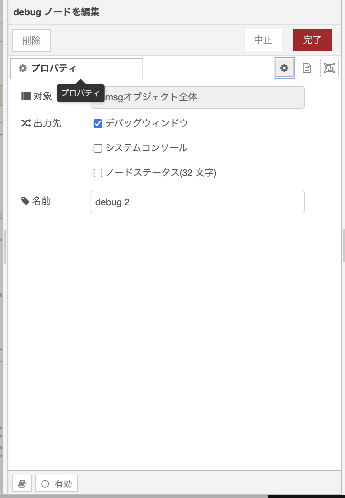
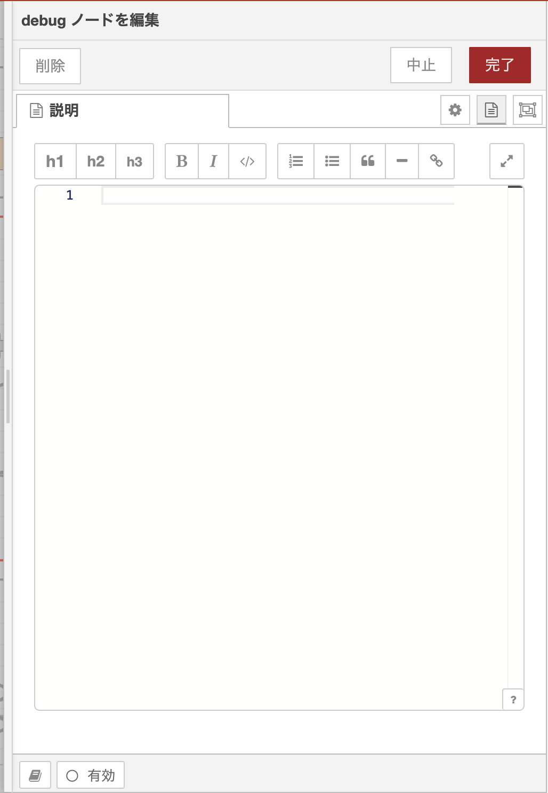

知っておくと作業が 2 倍速くなる 小技を集めました。特定のノードに依存しない、フロー編集の「横串」の知識です。
📋 このガイドの対象
💡 表記について
まず覚えるべき「絶対必修 10 個」と、知っていると作業速度が上がる「便利な 15 個」に分けて掲載します。
| ショートカット | 動作 | 使いどころ |
|---|---|---|
| Ctrl+D | デプロイ（変更を反映して実行） | 編集 → 即反映の基本動作 |
| Ctrl+Z | 元に戻す（Undo） | 誤って削除・移動した時 |
| Ctrl+Y | やり直し（Redo） | Undo しすぎた時 |
| Ctrl+F | フロー内検索 | ノード名・ID・プロパティで検索 |
| Ctrl+C / Ctrl+V | コピー / ペースト | ノードや接続線も含めて複製 |
| Ctrl+A | 全選択 | フロー丸ごとコピーしたい時 |
| Delete | 選択中のノード・線を削除 | — |
| Enter | 選択中のノードのプロパティを開く | マウスのダブルクリック相当 |
| Esc | 選択解除・ダイアログを閉じる | — |
| Shift+? | キーボードショートカット一覧を開く | 困った時の駆け込み寺 |
| ショートカット | 動作 | 備考 |
|---|---|---|
| Ctrl+E | エクスポートダイアログを開く | 選択範囲・現在フロー・全体を選んで JSON で書き出し |
| Ctrl+I | インポートダイアログを開く | — |
| Ctrl+Delete | 削除して両隣をつなぐ | 中間ノードを抜きたい時に超便利 |
| Ctrl+Shift+G | 選択ノードをグループ化 | → グループ化解説 |
| Ctrl+Shift+U | グループ解除 | — |
| Ctrl+Shift+C / V | グループのスタイルをコピー / ペースト | 色や枠線を他のグループに転写 |
| Ctrl++ / Ctrl+- | ズームイン / アウト | Ctrl+0 で 100% に戻る |
| Ctrl+Space | サイドバーの表示/非表示 | 画面を広く使いたい時 |
| Ctrl+P | パレットの表示/非表示 | 同上 |
| Ctrl+Shift+P | アクションリストを開く | VS Code のコマンドパレット相当。全操作を検索実行できる |
| Ctrl+[ / Ctrl+] | 前後のフロータブへ移動 | — |
| Alt+A | 選択ノードを整列 | 続けて方向キーで上下左右に揃える |
| Shift+矢印 | キャンバスを 10 グリッド分スクロール | — |
| 矢印キー | 選択ノードを 1 グリッド分移動 | 細かい位置調整用 |
| ノードをワイヤ上にドロップ | ワイヤに自動挿入 | これだけマウス操作だが、知らない人が多い 最強の小技 |
💡 カスタマイズ可能
Shift+? で開くダイアログから、すべてのショートカットを自分好みに変更できます。
ノードの編集ダイアログを開き、右上の 「外観」タブ を選ぶと、「ラベル」項目があります。「非表示」にチェックを入れると、フロー上でそのノードのラベル（名前 or タイプ名）が表示されなくなります。

チェックを入れる前と後でノードの見た目が次のように変わります。

大量に debug ノードを並べたいけれど画面を散らかしたくない、というシーンで特に効果を発揮します。フローの構造に集中したいときはオフにしてみましょう。
💡 使いどころ
ノードの name プロパティを空欄のままにすると、ノードタイプ名（inject、function 等）がそのまま表示されます。フローが大きくなると意味が読み取れなくなるので、できるだけ 役割が分かる名前 を付けましょう。
function としか表示されない関数1、処理 ─ 何の処理か分からない温度を ℃→℉ に変換異常値を除外JSON を整形して送信ノード編集ダイアログで 「ノードを有効化」スイッチをオフ にすると、そのノードは灰色表示になり、デプロイしてもメッセージが通過しなくなります。
💡 使いどころ
新しいノードを 既存のワイヤの上にドラッグして放す と、Node-RED が自動でワイヤを切り、間にノードを挿入してくれます。「あとから処理を挟みたい」シーンで頻出する操作です。
例：inject → debug の途中に change を挟みたい時、change をワイヤの上にドロップするだけで inject → change → debug になります。
Ctrl+Delete でノードを削除すると、Node-RED が 両隣のノードを自動でつなぎ直し てくれます。普通の Delete はワイヤごと削除されるので、フローを保ったままノードを抜きたい時はこちらを使いましょう。
Ctrl+C → 別のタブに切り替え → Ctrl+V で、フロー間でもノードを移動できます。ワイヤごとペーストされるので、丸ごと別フローに引っ越しが簡単です。
| 操作 | 方法 |
|---|---|
| パン（画面の移動） | キャンバスの空白をドラッグ、または Ctrl+矢印キー |
| ズームイン | Ctrl++ または Ctrl+マウスホイール |
| ズームアウト | Ctrl+- |
| ズームを 100% に戻す | Ctrl+0 |
| 大きく移動 | Shift+矢印キー（10 グリッド分） |
複数ノードを選択して Alt+A を押すと、整列メニューが開きます。続けて以下のキーを押すと指定の整列が行われます。
ノード名・ノードタイプ・プロパティ値・ノード ID で横断検索ができます。検索結果をクリックすると、該当ノードまでキャンバスがジャンプ。フローが増えてきたら必須の機能です。
| タブ | 役割 | 知っておくと得な使い方 |
|---|---|---|
| info | 選択中のノード/フローの説明を表示 | ノードを選択すると公式ヘルプが自動表示される。「このノード何だっけ？」が一発解決 |
| debug | debug ノードの出力を表示 | 右上の漏斗マークで「現在のフローのみ」「特定ノードのみ」にフィルタ可能 |
| context | flow / global コンテキストの中身を表示 | 変数の値が今どうなっているかを可視化できる。変数の種類ガイド 参照 |
| 設定（歯車） | フロー一覧、サブフロー、グローバル設定 | 無効化したノードや、各タブの管理 |
Debug ノードの編集ダイアログ「プロパティ」タブで、何を・どこに出力するかをまとめて設定します。

「対象」フィールドで、何を表示するかを切り替えられます。
msg.payload：最も使う。本体のデータだけを見るmsg オブジェクト全体：トピックやヘッダーも見たい時$count(payload) で配列長だけ表示）「出力先」のチェックボックス（複数選択可）で、どこに出すかを決められます。
| 出力先 | 挙動 |
|---|---|
| デバッグウィンドウ | サイドバーに表示（デフォルト） |
| システムコンソール | Node-RED 起動時のターミナルに出力。長期ログ向け |
| ノードステータス(32 文字) | ノードの下に小さくテキスト表示 される。常に最新値を見たい時に便利。UI のラベルどおり最大 32 文字に切り詰められる点に注意 |
💡 ステータス表示の活用例
センサー値を扱うフローで、debug の対象を msg.payload、出力先を「ノードのステータス」にしておくと、デバッグウィンドウを開かなくても キャンバス上で最新値が常時見える ようになります。長い JSON は切り詰められるので、温度・カウンタなど短い値の表示に向いています。
debug ノードの右側にある 緑のボタン をクリックすると、そのノードだけ一時的に出力を止められます。大量の debug を仕込んだ後、必要なものだけ ON にして観察する使い方が便利です。
debug サイドバー右上の漏斗アイコンから「全ノード」「現在のフローのみ」「特定のノードのみ」の 3 段階でフィルタできます。複数フローでデバッグしていると出力が混ざるので、ぜひ活用しましょう。
💡 表示は最新 100 件まで
debug サイドバーには 最新 100 件 までしか保持されません（古いものから消えていきます）。手動で全消去するには Ctrl+Alt+L が便利です。
⚠️ 本番デプロイ前のチェック
debug ノードは便利ですが、大量のメッセージを処理する本番フローで放置すると パフォーマンス低下や Node-RED メモリ枯渇 の原因になります。本番デプロイ時は不要な debug を無効化（個別 OFF または削除）しましょう。
Node-RED のあちこちに登場する 左側にアイコンが付いた入力欄 ─ これが typed input です。アイコンをクリックすると入力する値の型を切り替えられます。
| タイプ | 意味 | 使用例 |
|---|---|---|
msg. | メッセージのプロパティ参照 | payload、topic |
flow. | フローコンテキストの変数 | 同じフロー内のノード間で共有する値 |
global. | グローバルコンテキストの変数 | フローをまたいで共有する値 |
str | 文字列リテラル | hello |
num | 数値リテラル | 42 |
bool | 真偽値 | true / false |
json | JSON オブジェクト/配列 | {"a": 1} |
jsonata | JSONata 式 | payload.items[0].name |
env | 環境変数 | OS の環境変数や グループ/フローの env |
Function ノードのコード欄は、ブラウザ内で動く高機能なコードエディタです。プレーンな <textarea> ではないので、以下のようなエディタ標準の操作が使えます。
💡 補足
使用されるエディタは Node-RED の設定（settings.js の editorTheme.codeEditor）で切り替え可能です。利用可能な細かいショートカットはエディタ実装に依存します。
詳しくは Function ノードガイド、Function ノード JavaScript 編 も参照。
よく使うノード構成は ローカルフローライブラリ に保存しておくと、別フロー・別プロジェクトでも呼び出せます。
呼び出す側は Ctrl+I（読み込み）→ 「ライブラリ」 タブから選択します。
📌 ライブラリと Examples は別物
読み込みダイアログには「ライブラリ」と「Examples（例）」という別タブがあります。混同しないように整理しておきましょう。
node-red-contrib-xxx が同梱するデモフロー）インストール済みノードがサンプルフローを同梱している場合、Ctrl+I → 「例」タブ から確認できます。「このノードの使い方が分からない」時の最速ルートです。
部品化には複数の選択肢があります。詳しくは 概要ガイドの「フローを整理する・部品化するテクニック」 を参照してください。
| 目的 | 選ぶべき機能 |
|---|---|
| 見た目の整理 | グループ化 |
| 同じ処理を「1 個のノード」として何度も使う | サブフロー |
| テンプレ的に呼び出してから自由に編集 | ライブラリ保存 |
ノード・フロー・サブフロー・グループは、それぞれ 編集ダイアログの「説明」タブ で Markdown 形式の説明文を書けます。

💡 info タブで自動表示される
ノードを選択するだけで、書いた説明文がサイドバーの info タブに自動表示されます。コメントノードを並べるより画面が散らからない 利点があります。
📖 図も書ける
Markdown に加えて Mermaid 図 も書けるため、フロー全体のシーケンス図やフローチャートをドキュメント内に埋め込めます。